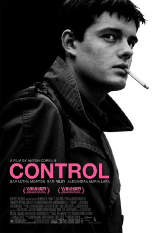
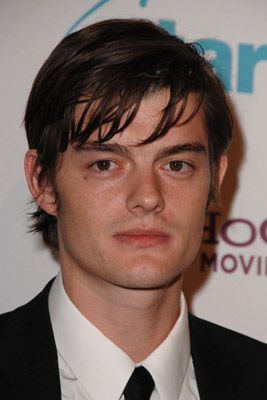

#5622 Control
Auszeichnungen: 1 BAFTA-Awards gewonnen
 
 IMDB-Wertung: 7.7 / 10
IMDB-Wertung: 7.7 / 10  Tomatometer: 88
Tomatometer: 88  Metascore: 0
Metascore: 0 
Der junge Ian Curtis heiratet seine 19 jährige große Liebe, Deborah. Sie erwarten ein gemeinsames Kind und Ian jobbt beim Arbeitsamt um seiner jungen Familie ein schönes Leben zu ermöglichen. Nebenbei gründet er mit Freunden eine Band namens ‘Joy Division’. Ian wird Sänger und Kopf einer der bedeutsamsten englischen Bands, die die Entwicklung des Punk in Großbritannien in den 70ern und 80ern wesentlich mitgestalteten. Zwar läuft es mit der Band bestens, doch Ian leidet unter Epilepsie und muss zudem auch noch mit den alltäglichen Problemen eines Stars kämpfen…
Jahr: 2007
Dauer: 122 Minuten
FSK: 12
Land: England Studio: Capelight PicturesTonspuren:
Untertitel:
Auflösung: SD (944x400) Größe: 1638 MB
Genre: Drama, Musik, Biographie
Regisseur: Anton Corbijn
Drehbuch: Evi Goldbrunner
Soundtrack:
Darsteller:
-  Sam Riley als Ian Curtis
 Samantha Morton als Debbie Curtis
Samantha Morton als Debbie Curtis Alexandra Maria Lara als Annik Honore
Alexandra Maria Lara als Annik Honore Joe Anderson als Peter Hook aka Hooky
Joe Anderson als Peter Hook aka Hooky- James Anthony Pearson als Bernard Sumner
- Harry Treadaway als Steve Morris
 Craig Parkinson als Tony Wilson
Craig Parkinson als Tony Wilson Toby Kebbell als Rob Gretton
Toby Kebbell als Rob Gretton- Andrew Sheridan als Terry
 Richard Bremmer als Mr. Curtis - Ian's Father
Richard Bremmer als Mr. Curtis - Ian's Father Matthew McNulty als Nick
Matthew McNulty als Nick- Nicola Harrison als Corrine
 George Newton als Studio Owner
George Newton als Studio Owner- Herbert Grönemeyer als Local GP
 Tim Plester als Earnest
Tim Plester als Earnest- Eliot Otis Brown Walters als Footballing Kid
- Robert Shelly als Twinny
- Tanya Myers als Ian's Mother
- Martha Myers Lowe als Ian's Sister
- David Whittington als Chemistry Teacher
- Margaret Jackman als Mrs. Brady
- Mary Jo Randle als Debbie's Mother
- Ben Naylor als Martin Hannet
- John Cooper Clarke als Himself
- James Fortune als MC
- Angus Addenbrooke als Colin
- June Alliss als Corrine's Mother
- Mark Jardine als Other Band Manager
- Paul Arlington als Hospital Doctor
- Joanna Swain als Maternity Nurse
- Joseph Marshall als Alan from Crispy Ambulance
- Laura Chambers als Claire
- Monica Axelsson als Tony Wilson's Girlfriend
- Lotti Closs als Gillian Gilbert
Datei: X:\2007(A-F)\Control (2007, FSK12, 944x400).mp4 seit 23.02.2017
Festplatte: HD 2007(A-Z)-2008(A-F)
 Es gibt insgesamt 65 Filme in der Gruppe '2007(A-F)'
Es gibt insgesamt 65 Filme in der Gruppe '2007(A-F)'